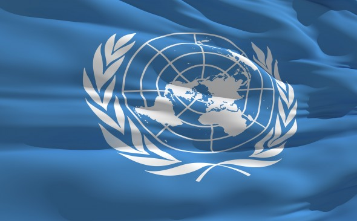
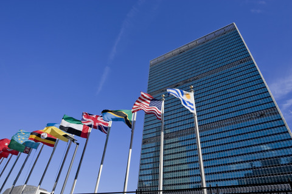
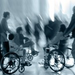

Людина має право висловлювати свої думки шляхом участі в законних демонстраціях. Слово "демократія" грецького походження і означає "народовладдя". Народ управляє політикою в Норвегії шляхом вибору політичних партій і депутатів в Стортинг і органи губернського і муніципального самоврядування. Партія або партії, які отримали на виборах найбільшу кількість голосів, отримують більшу кількість представників у Стортингу або в органах місцевого самоврядування (комунах і фюльке). Таким чином, рішення приймає більшість. Однак існує ще один важливий принцип - при формуванні політики більшість має дослухатися до думки меншості.
У демократичному суспільстві людина має ряд прав і свобод :
Права людини
 Права людини дійсні для всіх людей, і ми володіємо цими правами саме тому, що ми люди, а не тому, що ми живемо в певному місці світу або належимо до певної релігії чи народності. Тому ми і говоримо, що права людини є загальними. Права людини регулюють, насамперед, взаємини між державою і особистістю.
- всі люди народжуються вільними і рівними у своїй гідності та правах
- права людини однакові для всіх людей, незалежно від їхньої статі, релігії, раси, політичних поглядів, національності та ін.
- всі люди мають право на свободу та особисту недоторканність тортури, в будь-яких їх проявах, заборонені
- всі люди повинні мати правовий захист
- всі люди мають право вплинути на політичну ситуацію в своїй країні за допомогою участі в вільних виборах шляхом таємного голосування.
- Ніхто не може бути засуджений до тюремного ув'язнення без судового розгляду. Судовий розгляд означає, що незалежні присяжні вирішують, чи є підсудний винним чи ні, а незалежний суддя визначає міру покарання, якщо обвинувачений визнається винним. Однак людина може бути взятий під варту і до початку судового розгляду на період, поки поліція розслідує кримінальну справу.
- Всі обвинувачені мають право на адвоката.
- Суди є незалежними. Це означає, що вони в своїй роботі з конкретними справами не можуть піддаватися тиску або впливу з боку політиків, ЗМІ або кого-небудь ще. Ні Стортинг, ні уряд або інші органи влади не можуть втручатися в рішення судів.
- Жоден закон не має зворотної сили. Це означає, що при вирішенні питання про винність або винесення покарання може бути застосований тільки той закон, який діяв на момент вчинення дії або правопорушення.
- Людина має право бути членом політичних партій або організацій, що захищають інтереси працівників, не ризикуючи піддатися переслідуванню або репресіям.
- Людина має право бути членом організацій працівників, не ризикуючи піддатися переслідуванню або репресіям. У деяких випадках людина має також право на страйк.
- Людина має право висловлювати свої думки шляхом участі в законних демонстраціях.
Велика частина Декларації прав людини ООН включена в законодавство Норвегії.
Рівноправність
Поняття рівноправності традиційно має на увазі рівні права і можливості жінок і чоловіків. Сьогодні це поняття набуло більш широкого значення: Всі люди, незалежно від віку, національності, стану здоров'я, статі, релігії та сексуальної орієнтації, повинні мати рівні права і возможності.Равноправіе, зокрема, має на увазі володіння рівним впливом і рівними можливостями, справедливе поділ відповідальності і тягот і почуття впевненості в тому, що ти не піддасися насильства.
Свобода слова
Свобода слова - це право людини вільно висловлювати свої думки, зокрема, про політику і релігії, право вільно сперечатися з іншими людьми і право на свободу вираження поглядів в письмовій формі без побоювання покарання за ето.Однако існує межа між свободою вираження будь-якого свого думки в усній і письмовій формі і образою інших людей. Тому у нас існує ряд законів, що обмежують свободу слова. Наприклад, заборонено висловлювати дискримінують або расистські думки в офіційних дебатах - будь то в усній або письмовій формі. Свобода слова поширюється як на приватних осіб, так і на радіо, телебачення і газети.
правовий захист
Всі люди в Норвегії мають хорошу правовий захист. Це, серед іншого, означає наступне:
Свобода релігії та віросповідання
Свобода релігії та віросповідання означає, що люди можуть вільно вибирати, до якої релігії або до якого світогляду вони хочуть належати і практикувати свою релігію або свою думку. Ніхто не має права примушувати іншу людину стати членом або вийти з релігійної групи або громади. З моменту, коли людині виповнюється 15 років він / вона може самостійно вийти з релігійної громади або світоглядного суспільства. При цьому не має значення, що про це думають інші. Ніхто не може бути підданий переслідуванню або репресіям за свою релігійну прінадлежность.Человек може не тільки вільно і самостійно обирати релігію або світогляд, він має ту ж свободу залишитися незалежним.
Свобода організацій
Свобода організацій може означати кілька різних речей. Нижче наведені деякі з найважливіших: